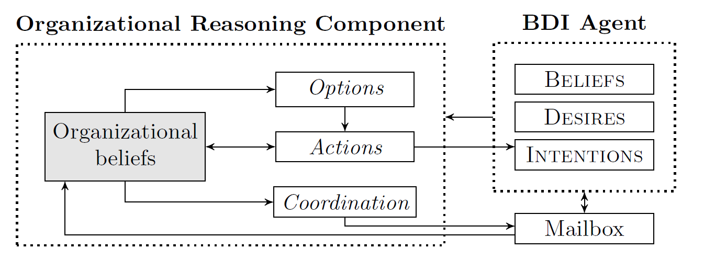
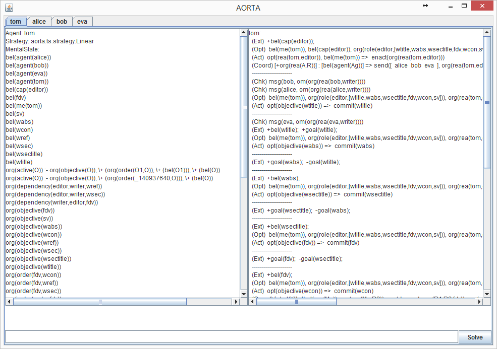

AORTA is an organizational reasoning component that can be integrated into the agent's reasoning mechanism, allowing it to reason about (and act upon) regulations specified by an organizational model using simple reasoning rules. AORTA assumes a preexisting organization, is independent from the agent, and focus on reasoning rules that specify how the agent reasons about the specification. The organization is completely separated from the agent, meaning that the architecture of the agent is independent from the organizational model, and the agent is free to decide on how to use AORTA in its reasoning. The separation is possible because AORTA is tailored based on the organizational model and its ontology.
AORTA provides organizational reasoning capabilities to agents, allowing the agents to reason about organizational matters. Organizational reasoning is divided into organizational option generation, organizational action deliberation and organizational coordination. An organizational option describes something that the agent should consider, e.g. committing to an objective or enacting a role. An organizational action is the execution of an organizational option: actually enacting a role or committing to an organizational objective. This creates the expectation (for the organization) that the agent should somehow believe it is able to achieve it, either by itself, by cooperating with other agents, or by delegating it. Deceitful agents might know that they cannot achieve an organizational objective, but will commit to it anyway to disturb the organization or to achieve their private goals. Organizational coordination is organization-level coordination, which is based on the agent's mental state. 
The organizational reasoning component of AORTA is shown above. The agent (assumed here to be a BDI agent) has a mental state, which is coupled to AORTA. Based on the mental state, AORTA can determine organizational options, and use organizational actions to change the mental state. The coordination component sends messages using the mailbox, and incoming messages can change the organizational structure.
The AORTA GUI provides information about each agent's mental state (left) and the transition rules that have been executed (right).
We have modified the Agent Java Path Finder (AJPF) to make it possible to model check agents with an AORTA component. This means we can verify properties such as
◇ org(ag, rea(ag, role)),
i.e., eventually, agent ag has the organizational belief rea(ag, role). The model checker is available as part of the AORTA system, which can be downloaded from Github using the link above.
The modelchecker works as a JPF plugin. It furthermore includes a build-configuration that creates a jar with all dependencies. This jar (in the folder standalone) can be run as follows:
java -jar aorta-modelchecker.jar AIL-file [PSL-file] [p=Propertyname] [m=Modelfile] [-save]
If no PSL-file is provided, the system is executed normally. Otherwise, modelchecking using JPF is performed. The jar should be executed in the working directory of the system to be verified. To model check a specific property in the PSL-file, use p=Propertyname. To generate a model of the entire system (use with precaution, can get quite large), use p=Propertyname m=Modelfile -save (will be generated using the property specified by Propertyname). To use the model file afterwards instead of running the system, use m=Modelfile.
The system relies on JPF and should therefore be setup as follows:
AORTA is developed in Java. It has been integrated with Jason.
AORTA is open source. The source can be obtained on Github: